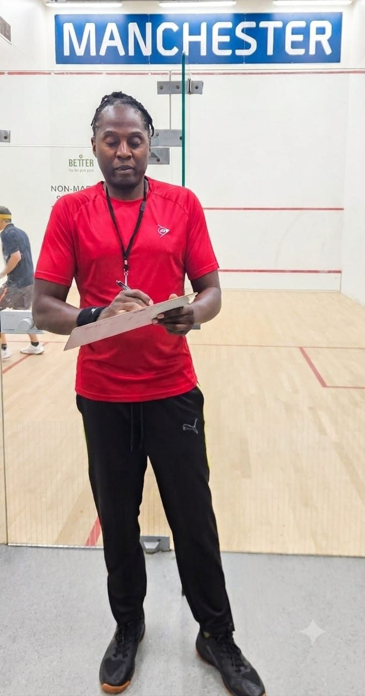

About Us
Independent squash coaching in South Manchester, in partnership with local sports clubs and leisure centres across the Cheshire area.
Who we are
Manchester Squash (MS) is an independent squash coaching organisation based in South Manchester. MS works in partnership with local sports clubs and leisure centres in the Cheshire area and is headed by Mas Selisho, a former international squash player and professional squash coach.
At MS, we provide the very best professional squash coaching, which includes tailoring a specific fitness programme for each individual. MS provides squash coaching and fitness guidance to individuals and small groups. The coaching of juniors receives special attention as MS strives to assist the younger generation to develop both physical fitness and mental robustness through the sport of squash, a sport that can be referred to as physical chess.
Our primary objectives are to maximise player potential and to develop the physical and mental health of everyone attending MS courses, all at an affordable cost.

Meet your coach
Over 25 years' experience playing squash as a professional, and over 20 years coaching every level of player, from absolute beginners to international professionals.
Mas regularly competed with the top 20–50 world-ranked squash players, recording notable victories over quality opposition in the UK and internationally. At The Northern he grew junior, men's and ladies' participation, regained National Squash League participation for the club, and directed assistant coaches while running 9 men's, 3 women's and 5 junior squash teams.
Community care
MS is committed to assisting in the community, acting as a volunteer committee member for the Manchester Junior League. This includes organising competitions, transporting young competitors and providing them with meals, at no reward. Mas also helps organise internal squash tournaments for members and external tournaments such as the Cheshire Open Inter-County fixtures for juniors.
Professionalism
Coaching at MS is focused on achieving each client's goals, from learning to play squash as a beginner through to guiding players to compete successfully at international professional level. Tailor-made plans are designed and executed to achieve your specific goals in a fun and enjoyable way. Each individual is treated with great commitment and respect.
England Squash qualified coaching, Level Two and Level Three certified.